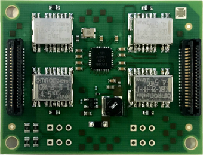
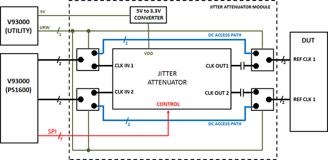
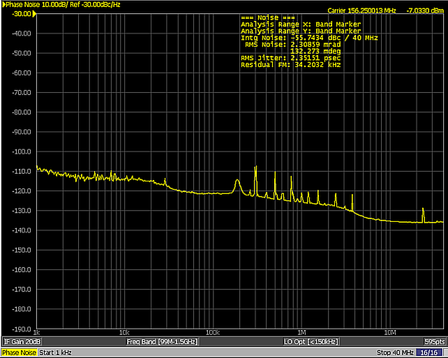
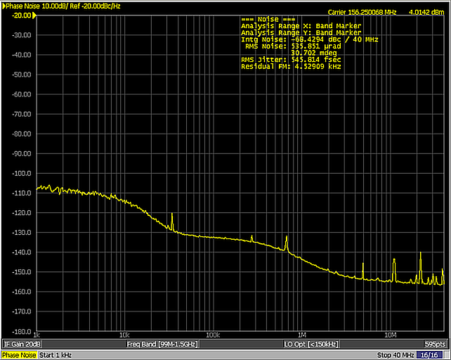
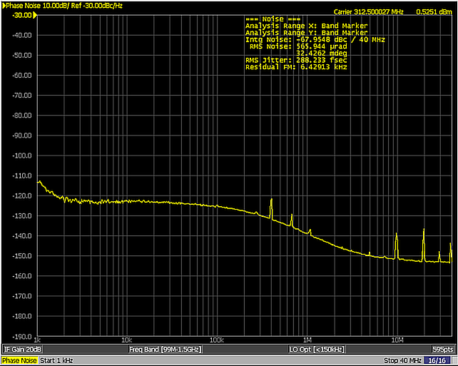
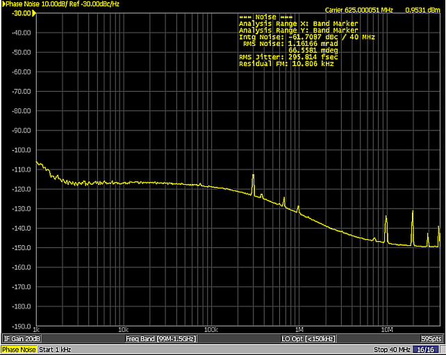
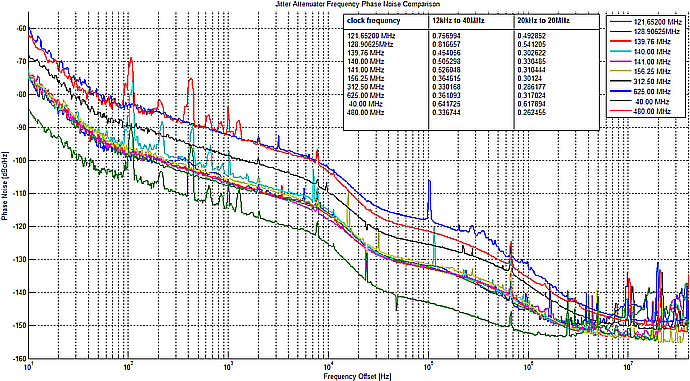

Advantest V93000 E5214B Jitter Attenuator Module

General description
The Advantest V93000 Jitter Attenuator Module is a PCB module that can be integrated in any V93000 DUT board to provide a very low jitter DUT reference clock using a low cost digital channel. It can be powered by the V93000 utility power and requires 1 utility line and 11 PS1600 channels. It provides 2 AC coupled clock outputs that can have different frequencies and a bypass path for DC measurements as shown on the high level block diagram below. The Jitter Attenuator Module uses a Silicon Labs Si5326 jitter attenuator at its core.

For detailed DUT board layout and pin assignment requirements refer to the Jitter Attenuator Module (E5214B) in the DUT board design reference.
Application paper
To download the complete application paper, click the link below:
A_DUT_Reference_Clock_Jitter_Attenuator_Module_For_The_V93000_ATE_Platform_Paper_revB.pdf
Technical specifications
- Scope
- The characteristic performance is non-warranted typical values at the jitter attenuator output using a typical PS1600 digital channel at the input and can depend on the DUT board design specifics like the length and isolation of the clock signal path. No calibration is required for the jitter attenuator module.
- Specifications
-
Jitter Attenuator Module Dimensions 42 mm (W), 56 mm (L), 12 mm (H) Weight 14 g Required number of utility lines 1 Required number of PS1600 channels 11 Operating voltage 5 V ± 10 % Input low voltage (relay control input) 0.9 V (maximum) Supply current (JAM mode) < 500 mA Supply current (bypass mode) < 200 mA Bypass path bandwidth 2.0 GHz Bypass path resistance < 0.3 Ω Relay switching time 3.0 ms (maximum) Operating temperature 0 ... 70 °C1) Connector type SAMTEC LSEM-120-03.0-F-DV-A-N-K-TR Input common mode voltage 1.1 V (minimum) Differential input voltage swing 0.25 V (minimum) Output frequency range 2 KHz ... 945 MHz Output decoupling capacitor 10 nF Differential output swing (LVPECL) 1.1 V (minimum) Differential output swing (CML) 0.35 V (minimum) Differential output swing (LVDS) 0.5 V (minimum) Warranty 1 year
Performance characteristics (measured)
| Input clock frequency | Output clock frequency | Module configuration | Integrated phase noise (1 KHz ... 40 MHz) |
|---|---|---|---|
| 156.25 MHz | 156.25 MHz | 8 kHz PLL Bandwidth | 550 fs |
| 156.25 MHz | 312.5 MHz | 8 kHz PLL Bandwidth | 300 fs |
| 156.25 MHz | 625 MHz | 8 kHz PLL Bandwidth | 300 fs |
The above values only represent a single measurement example using one randomly selected jitter attenuator module in a specific V93000 PS1600 system at room temperature. The performance specifications are defined by the Silicon Labs Si5326 jitter attenuator IC specifications.
The phase noise performance depends on the ratio between the input and output frequencies, and also on the selected PLL bandwidth. The available PLL bandwidth values depend on the frequency ratios. Also the integrated phase noise value depends on the selected integration frequency range.
Typical phase noise plots
- Measured phase noise plot of a randomly selected jitter attenuator module with a specific V93000 PS1600 system for a PS1600 channel running at 156.25 MHz (measured in bypass mode):

- Measured phase noise plot of a randomly selected jitter attenuator module with a specific V93000 PS1600 system for an output clock frequency of 156.25 MHz:

- Measured phase noise plot of a randomly selected jitter attenuator module with a specific V93000 PS1600 system for an output clock frequency of 312.5 MHz:

- Measured phase noise plot of a randomly selected jitter attenuator module with a specific V93000 PS1600 system for an output clock frequency of 625 MHz:

- Measured phase noise plots of a randomly selected jitter attenuator module with a specific V93000 PS1600 system for different output frequencies and integration ranges:

Application note
- Important notes on the utility 5V and R/W line usage with the Jitter Attenuator Module and temperature impact
-
The jitter attenuator module requires 5 V +/- 10% so it is critical to make sure the configuration of the slots supports this requirement (see Internal utility power supply (V93000 systems)).
When using the jitter attenuator module in a hot testing environment, the temperature increase will have an impact to the coil resistance of the jitter attenuator relay and the utility R/W line switch-on characteristics which might no longer be sufficient to apply the required switching voltage to the relay (see Utility line characteristics).
If using the Jitter Attenuator Module revision B (Relay is the Omron G6K-2F-RF-T DC5), there is the possibility that the utility R/W line saturation voltage is too high in order to switch the relays at the specified maximum operating temperature of 70 °C. In this case the user should not use the utility R/W line directly but add a circuit on the DUT board connecting to the relay control input of the Jitter Attenuator Module using an analog switch or FET controlled by the utility R/W line instead of the direct connection to the Jitter Attenuator relay control input. Please note that such a circuit might invert the logic state at which the relay is switched.
If using the Jitter Attenuator Module revision C (Relay is the Omron G6K-2F-RF-T DC4.5), the utility R/W line saturation voltage is enough to switch the relays even at 70 °C (measured at the relay housing) but the previous suggestion of using an analog switch or FET controlled by the utility line R/W is still advisable for testing under high temperature conditions.
Also in hot testing at temperatures above 70 °C for example, 110 °C), there is the risk that the jitter attenuator module will be above the maximum specified temperature. One approach to mitigate this problem is to use the V93000 purge kit (see TDC topic Purpose of the Purge Kit in the service guide) to cool down the back side of the DUT board where the jitter attenuator module is installed.
Functional changes
- Introduced in SmarTest 7.4.1
- SmarTest 7.5.4: Specifications updated, application note "Important notes on the utility 5V and R/W line usage …" added